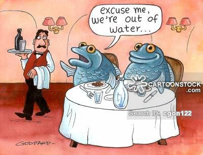

"Nirvana is right where you are, provided that you don't object to it." --Alan Watts
When I was little it seemed necessary to give others what they wanted from me. You want me to be good? Well, I don’t know how, and I’m not at all sure I am good, but ok. You want me to be nice? To give you my love? To be eager to do homework and live for the future, making grades that will someday pay off in money and the good life?
Trying, trying, trying.
Usually also failing failing failing.
Now I’m grown up (seemingly) and people still look expectantly to me to give them something. Not so much good behavior anymore, thankfully. But they still want me to be nice. And they still want me to love them.
On top of all that now, they also want my point of view. They want whatever understanding they imagine I have, they want inclusion in my world. They want me to give them my supposed magic.
Kind of like bank robbers - “This is a stick up! Hand over the enlightenment!”
And like in my childhood, again, I would if I could. If I had it. If it could be given.
Though now I’m clear that this is a losing proposition.
Not least because humans are all about the gimme. Humans want to get. And not just a little; we want to get a whole lot. We want more, not less. We want lots of something, none of nothing. We want extra, we want plenty, we want forever, we want permanent.
There's never enough of any of that. So there’s never going to be enough getting.
Even though folks are prepared to work hard for it. Sharing apparent love and approval in order to get others to give it back. Sitting in meditation to get more transcendence. Sitting with feelings to get more peace and self acceptance. Asking questions of teachers, reading self-help books, listening to podcasts ad infinitum, to get "awake."
Studiously, effortfully, ignoring what’s here, to get something that isn’t.
Which doesn’t seem to be all that productive. Y'know, since it doesn’t actually give anyone what is being sought.
Because it's not possible to feel one’s own love by grabbing a hold of someone else’s. It's not possible to get present by ignoring the present. One can’t awaken now by trying to attain an exalted state that will (hopefully) come at some future time. It's not possible to get enough right now, by focusing on the lack of the now.
Seeking anything is a rejection of the present, a rejection of what is here.
Not to mention a reification of the identity of self, as the one who wants, the one who doesn’t have, the one who can make things happen, if only they do all the right efforts on the right path.
Which may be th do-posit elf what is being sought.
Turns out all that trying, all that seeking, gets in the way, and actually prevents the hotly desired getting.
So I would share if I could, assuming I had anything that’s of any use to anyone else. But it won't help.
It can't be given, anyway.
Love and understanding have to arise, on their own, when and if they please, individually. They can’t be manipulated into showing up due to some human’s considerable efforts.
Humans can’t hitch a ride on someone else’s experience in order to get what they think they want.
Which is why my best offer, the only thing I might have to share, is a wish for folks to stop looking to anyone else to find what is…
already ours.
If there is a way, it is to find our own way.
And if the mind kicks in and screams, "But I don’t know how?"
Perfect. Thinking we need to know how is what turns us to others to teach us in the first place.
There is no someone else's how. There is no someone else's right way. There is no someone else's answer.
We got this.
So maybe we can throw out all the dogma we’ve grabbed from others, and throw out all the certainty that they have anything we need.
Maybe we can ask, and wait, and notice our own answers, our own understanding, our own love.
Which are there already.
On their own.
We might even have noticed, if we hadn’t been discounting our experience by thinking someone else's is better or righter.
Existence doesn’t have any need for clones.
We each have our own teeny bit of the great experiential pie.
Mine is already taken. Everyone else’s is too.
Everyone gets their own slice.
And it is delicious.
And enough.
If only we’d notice
What's in our own hands
Already.
“I have already settled it for myself so flattery and criticism go down the same drain and I am quite free.”
― Georgia O'Keeffe
"I exist as I am, that is enough,
If no other in the world be aware I sit content,
And if each and all be aware I sit content.
One world is aware, and by the far the largest to me, and that is myself."--Walt Whitman
Click to watch Robert Saltzman and Judy talking on Zoom.
Want to watch Judy's Buddha At The Gas Pump interview?click here
